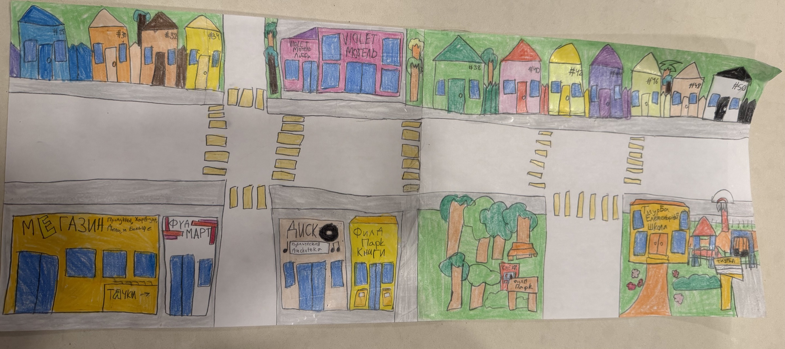

Гуляй по улицам, заходи в дома и знакомься с жителями. Здесь Violet Motel, Мегазин, дискотека, книжный магазин, парк и школа — как на твоих двух страницах.
WASD или стрелкиХодить по городу · Пробел — прыжок
Потяни мышью / пальцемПосмотреть вокруг
V — сменить камеруОт первого лица или со стороны
Shift — бежать · R — домойE — войти / поговорить · Esc — меню
Подойди к двери или жителю и нажми E. Внутри дома можно гулять; выход — у синей двери.

Город построен по этому рисунку. Следующие страницы можно будет добавить позже.